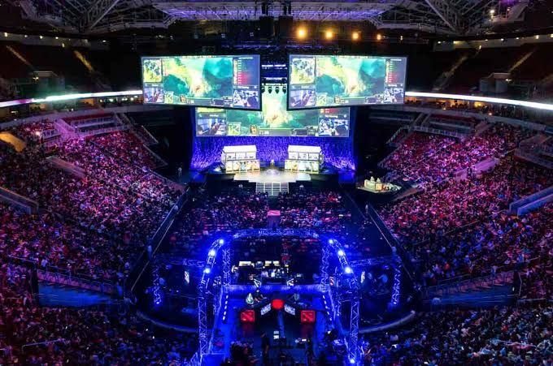

Our regular scrimmage sessions aren’t just about sharpening our skills—they’re about building real connections. Every week, members gather to strategize, practice, and challenge each other in friendly matches. Whether we’re indoors gaming or outdoors hanging out, these meet-ups keep our team spirit strong and ready for the next tournament.
Monthly Showdown
Once a month, the club comes alive with competitive energy as members face off in our biggest event—the Monthly Showdown. Teams and solo players battle through intense matches, showcasing their skills, strategies, and teamwork. With brackets, shoutcasters, and live streams, it’s the perfect mix of high-level play and community hype. Winners earn bragging rights, exclusive rewards, and a spot on the club’s Hall of Fame.

Watch Parties
The club comes together to experience the thrill of professional e-sports on the big screen. Members gather in a lively setting to watch top-tier tournaments like Worlds, The International, or the MPL Finals, complete with snacks, cheering, and friendly banter. Between matches, the event features fun activities such as prediction games, trivia quizzes, and live commentary from club members, making it more than just a viewing—it’s a celebration of the games we love and the players who inspire us.